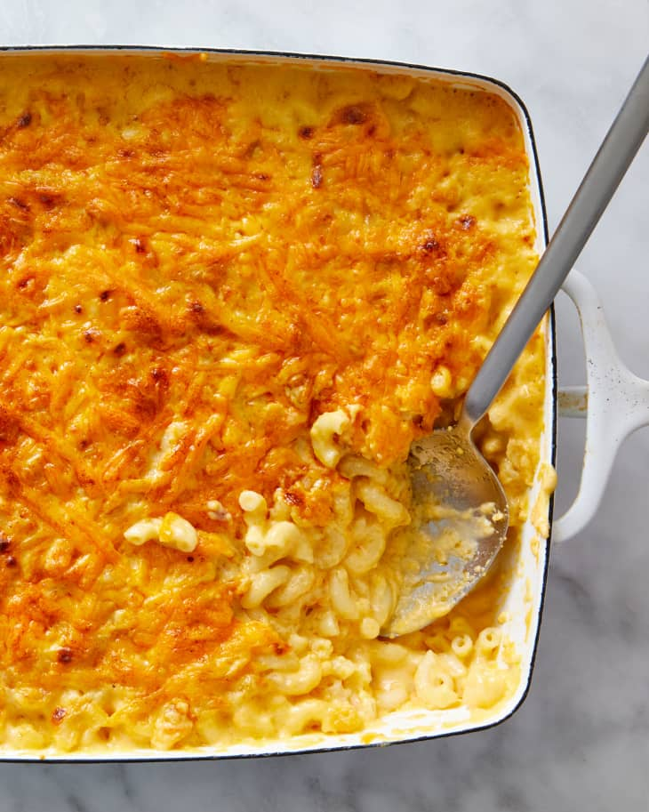

Mac and Cheese

Description
No comfort food satisfies quite like homemade mac and cheese. There are countless variations, but after years and years of recipes testing, I’ve come to the conclusion that baked is best. This gooey and cozy casserole is an essential part of traditional holiday spreads and summertime potluck buffets, but it's also perfect for curling up with on the couch.
Ingredients
- 1 pound dried elbow macaroni
- 6 tablespoons unsalted butter
- 1 1/2 pounds medium cheddar cheese
- 1/4 cup all purpose flour
- 5 cups whole milk
- 2 cups breadcrumbs
- 1 3/4 teaspoons salt
- 1/4 teaspoon black pepper
- Paprika for garnish
Steps
- put a rack in the middle of the oven and heat it to 350F
- coat a 9x13 inch baking dish with butter
- bring a pot of heavily salted water to a boil and add the macaroni, cooking it for 2 minutes less than the package directions for al dente
- grate 1 1/2 pounds cheddar cheese
- drain the macaroni
- melt 6 tbsp unsalted butter in the pot
- sprinkle in 1/4 cup flour and stir until golden and toasted
- slowly whisk in 5 cups whole milk or half-and-half, 1/2 cup at a time, until no lumps of flour remain. bring to a boil. reduce the heat to medium-low and continue cooking, whisking frequently, until the sauce is thickened and clings to the back of a spoon, 5 to 7 minutes.
- remove the pot from the heat and add in 5 cups of cheese, salt and pepper
- stir until the cheese is melted
- transfer half of the mac & cheese to a dish and spread into an even layer. sprinkle on shredded cheese. repeat this layering and sprinkle paprika over the top
- sprinkle the breadcrumbs over the top
- bake for 10 minutes or until the mac and cheese is bubbling on the edges and melted on the top
Back to Home